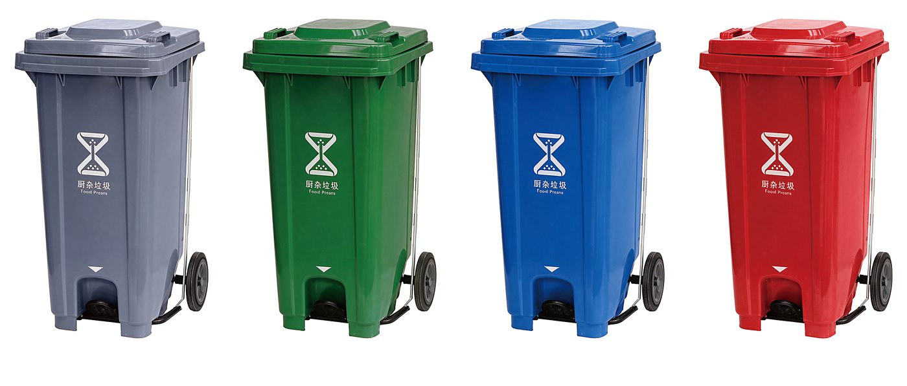

120L/240L Food Waste Bin with Pedal and Wheels POU-107
A food waste bin opened by foot: a pedal at the base lifts the lid, so nobody puts a hand on a lid that collects kitchen waste, and the body sits on wheels so a full 240 L load is rolled out rather than carried. 120 L at 47.6 × 55.5 × 95.7 cm and 240 L at 58.4 × 73.2 × 108.8 cm.
Key Features
Detailed Specifications
| Model | POU-107-120 / POU-107-240 |
|---|---|
| Product type | Food waste bin with foot pedal and wheels |
| Capacity | 120 L / 240 L |
| Size | POU-107-120: 47.6 × 55.5 × 95.7 cm POU-107-240: 58.4 × 73.2 × 108.8 cm Width × depth × height as printed in the catalogue |
| Colours | Grey, green, blue, red |
| Lid operation | Foot pedal at the base, lid closes on the rim |
| Wheels | Wheels under the body |
| Packing | 4 pcs per carton |
| Application | Staff canteens, hotel kitchens, estate kitchens and food markets |
Model Codes & Available Sizes
| Capacity | Model pedal food waste bin, one code per capacity |
|---|---|
| 120 L | POU-107-120 |
| 240 L | POU-107-240 |
| Capacity | Size (cm) | Carton size (cm) | Packing | Colours |
|---|---|---|---|---|
| 120 L | 47.6 × 55.5 × 95.7 | Confirmed with order | 4 pcs/ctn | Grey, green, blue, red |
| 240 L | 58.4 × 73.2 × 108.8 | Confirmed with order | 4 pcs/ctn | Grey, green, blue, red |
One code per capacity; colour is chosen on the order against the same code, and the body carries the food waste marking printed in the catalogue. Carton dimensions are confirmed at quotation. Size is width × depth × height over the body with the lid closed.
Product Description
The POU-107 is the bin for the one waste stream nobody wants to touch: food. The lid opens on a foot pedal at the base, so a cook, a server or a cleaner drops waste in without putting a hand on a lid that has been over a bin of kitchen scraps all day — and because the lid closes fully when the foot lifts, odour and flies stay in instead of being invited out.
Two capacities cover the two places food waste happens. 120 L at 47.6 × 55.5 × 95.7 cm sits outside a restaurant kitchen door or in a hotel back-of-house corridor, where the load is a shift's worth of prep waste. 240 L at 58.4 × 73.2 × 108.8 cm is the canteen, the food market or the estate kitchen where a day's waste is a full body and collection comes on a fixed round.
The body sits on wheels, which is a handling decision rather than a mobility gimmick: a full 240 L food waste bin is heavy, wet and the last thing two staff should be lifting at the end of a shift. Rolled to the collection point and back, it stays a one-person job, and the pedal keeps the lid closed while it is moved.
The stream is marked on the body, so a bin put out at the wrong point on a collection day is obvious from the end of the road — a practical detail on estates and market rows where several coloured bins stand together. The lid closes on the rim, the pedal mechanism sits out of the wet, and the moulded body hoses down after a load that has been sitting in a warm kitchen.
Packing and supply: 4 pcs per carton; carton dimensions are confirmed at quotation. We ship from Guangzhou and quote EXW, FOB or CIF, and we quote spare lids, pedals and wheels with the order, because a pedal is the part that wears first on a bin used every shift. Also in the outdoor range: the tapered 240 L POU-105, the 60 L pedal bin on legs POU-109, the pedal side wheel bins POU-110, and the whole range under Dustbin. Send the capacity, colour split, quantity and destination port and we reply within one working day.